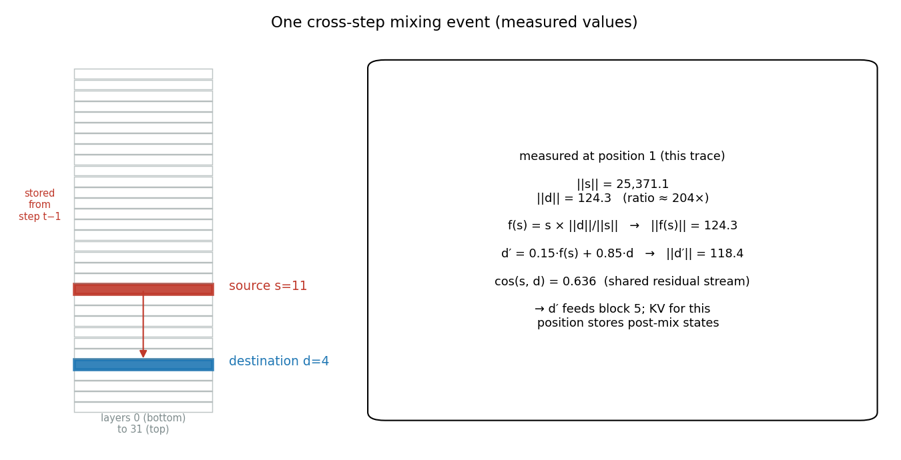
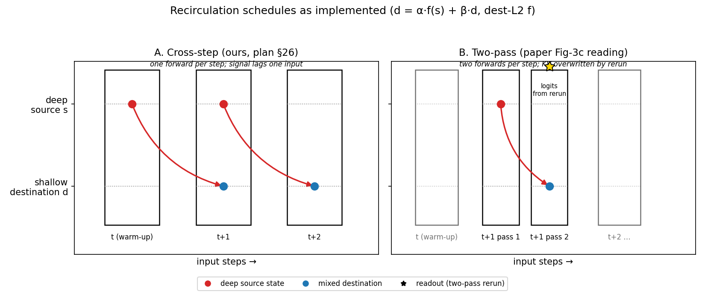
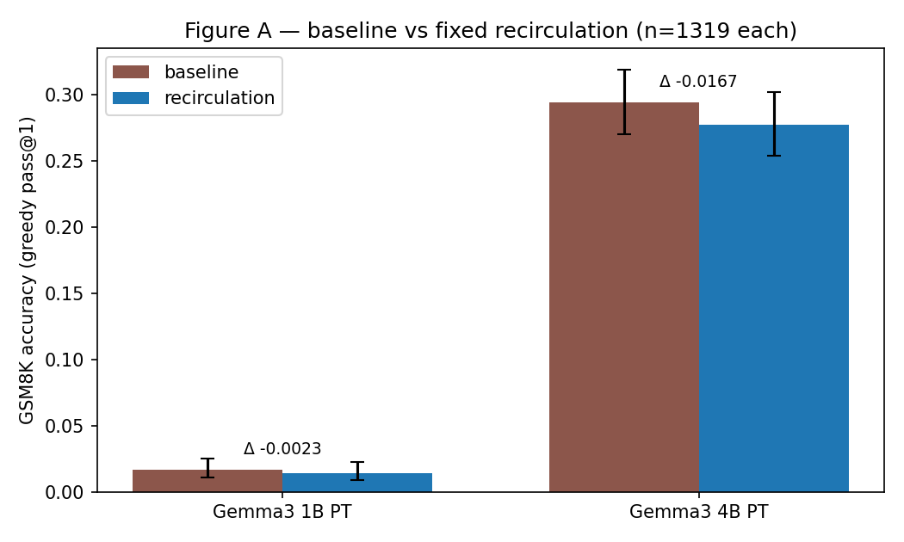
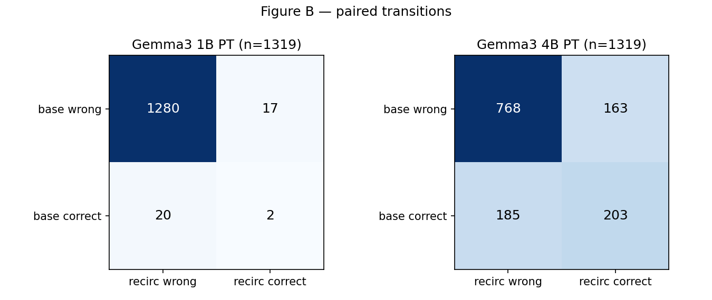
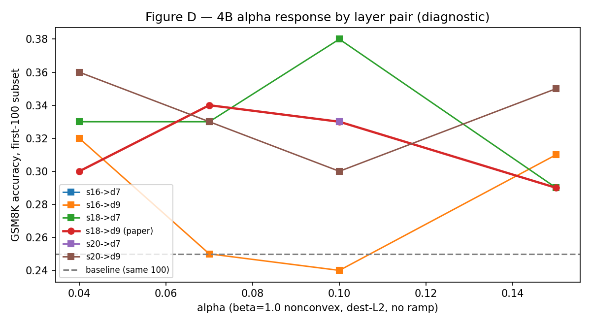
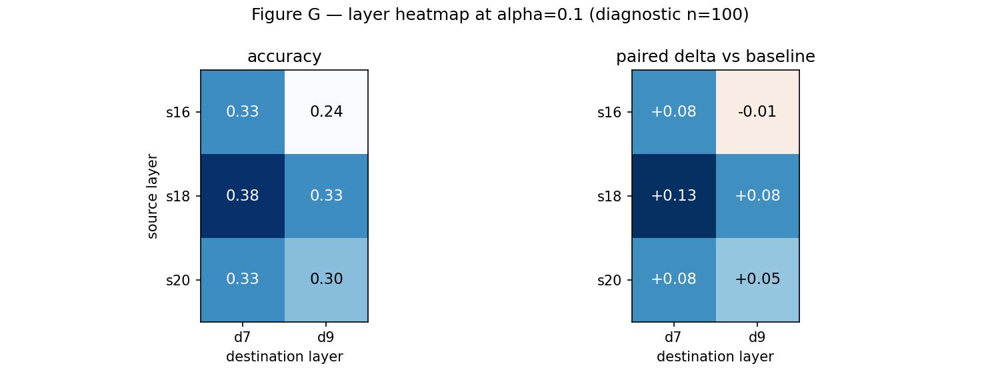

Fixed, training-free deep→shallow feedback on GSM8K — implemented two ways, measured honestly
Task owns benchmark semantics · ModelAdapter owns generation · Evaluator orchestratesintervention: {type: none}) — swapping in recirculation changes no evaluator, task, prompt, parser, or scorer codefcf18a2a…, 4B rev cc012e0a…openai/gsm8k test, n=1319, raw order, stable idsQ: … A: Let's think step by step. → extraction prompt; raw PT prompts, BOS-guardedBoth schedules share one implementation behind a schedule parameter:

One forward per input position; destination at step t+1 mixes the stored deep source from step t (Weng babysitting question, 45 tokens):
Per input position, two forwards:
Logits come from the rerun. A readout-from-normal ablation is cheap future work — held open, not assumed.
| cross-step (A) | two-pass (B) | |
|---|---|---|
| source capture | previous position | same position, first pass |
| forwards / position | 1 | 2 (~2× compute) |
| logits from | the single mixed pass | the mixed rerun |
| full-scale evidence | n=1319 × 2 scales | — |
| panel evidence | comparison baseline | n=100, 4 cells |
The paper’s prose and its Fig-3c formalization admit both readings — so we built both. Without the cross-step arm, the two-pass panel could not isolate schedule effects at all.



Not one point — the surface around it
a010_s18_d7 at 0.38 (+0.13, nominal p=0.012, Bonferroni-n.s.)

| config | two-pass acc | Δ vs base | Δ vs cross-step |
|---|---|---|---|
| a010_s18_d7 | 0.31 | +0.06 | −0.07 |
| a004_s20_d9 | 0.35 | +0.10 | −0.01 |
| a015_s20_d9 | 0.37 | +0.12 | +0.02 |
| a015_s18_d9 (paper) | 0.33 | +0.08 | +0.04 |
All cells beat the same-100 baseline; none dominates its cross-step twin. The schedule variant does not obviously explain the paper gap — readout choice and exact unrolling remain open.
A null with 69–90% output churn is not “nothing happened”
recirc-gsm8k